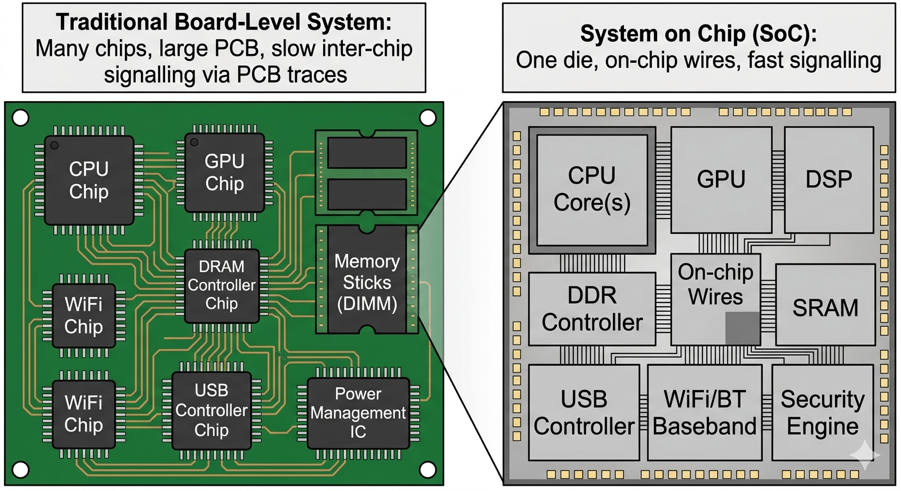
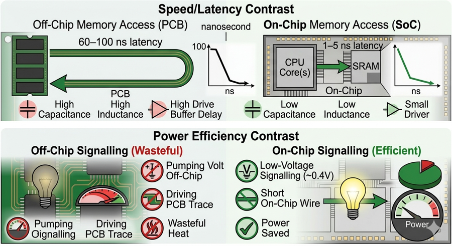
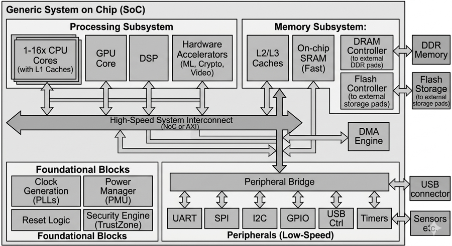
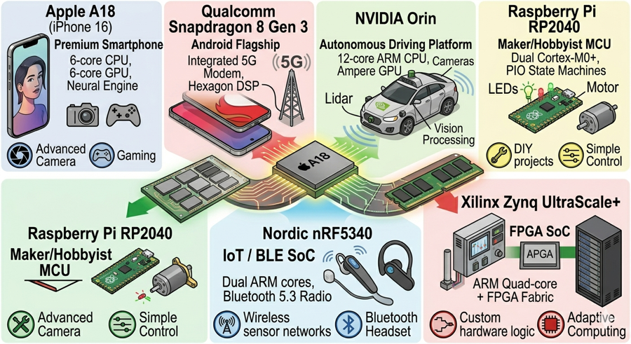
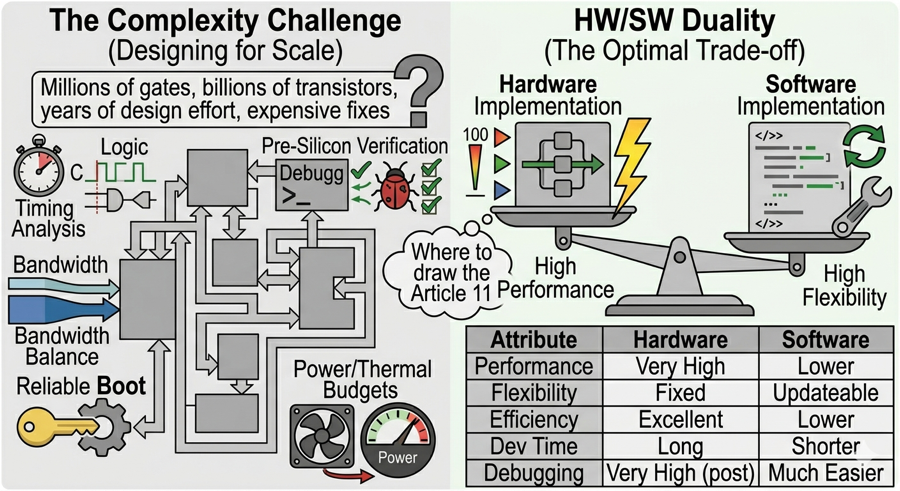

Series: Introduction to SoC Design | Article 2 of 11
Introduction
In the previous article we traced the seventy-year journey from room-sized mainframes to silicon-level integration, arriving at the System on Chip - a complete computer system fabricated on a single piece of silicon. Now it is time to look inside one: what blocks does it contain, how do they relate, and why does integration deliver such dramatic benefits?
The Board-to-Silicon Transition

In traditional electronics, a "system" was a circuit board populated with many separate chips, each performing one role: a CPU chip, a separate memory controller, a graphics processor, communication peripheral chips, and a power management IC, all connected by copper traces on the PCB.
A System on Chip collapses most or all of those components onto a single piece of silicon. The processor, memory interfaces, graphics engine, USB controller, cryptographic accelerator, radio interface, and many other functional blocks are fabricated together in one integrated circuit.
{kind=link}
The term "SoC" emerged formally in the mid-1990s when transistor densities crossed roughly 100 million per chip - the threshold at which integrating a complete system became both technically practical and economically compelling. Today, modern SoCs routinely contain tens of billions of transistors.
Why Does Integration Matter?

{kind=link}
Putting everything on one die is not just about convenience. It delivers fundamental advantages across every dimension that matters.
Speed
On-chip wires are nanometres wide and micrometres long. Signals cross them in fractions of a nanosecond. Signals crossing a PCB encounter far greater inductance and capacitance, longer paths, and the need for high-drive output buffers - all of which introduce significant delay. An on-chip memory access takes 1-5 ns; an off-chip access might take 60-100 ns for the same data.
Power Efficiency
Driving a signal off-chip requires pumping it up to a voltage level and current that the PCB can handle reliably - this is fundamentally wasteful. On-chip signalling operates at much lower voltages (as little as 0.4 V for the fastest paths) and does not need the drive strength of an off-chip interface. Every chip-to-chip boundary eliminated saves power directly.
Area and Cost
Fewer chips means a smaller PCB, which means a smaller, lighter product. At the volumes of the smartphone market (billions of units per year), even a 5 mm² reduction in PCB area translates into substantial savings. One complex SoC may cost less to manufacture and assemble than the collection of chips it replaces.
Reliability
Solder joints and connectors are the most common failure points in electronic assemblies. Fewer chips mean fewer joints, longer mean time between failures, and better suitability for vibration-prone environments (automotive, industrial, aerospace).
The Anatomy of a Generic SoC

While no two SoCs are identical, most share a recognisable set of functional blocks:
{kind=link}
Each block has its own dedicated article later in the series. Here is a brief map of what each does:
Processing Subsystem
The "brains" of the SoC. One or more CPU cores execute general-purpose software. Alongside them are specialised processors - DSPs for signal processing, GPUs for graphics and parallel computation, and dedicated hardware accelerators for AI inference, video coding, and cryptography. (Article 04)
Memory Subsystem
On-chip SRAM provides fast, low-latency storage close to the processors. DRAM controllers connect to external memory for the large working set. A cache hierarchy sits between the two. (Article 05)
System Interconnect
The internal "highway" connecting all blocks. High-bandwidth connections use AXI; lower-bandwidth peripheral connections use AHB or APB. (Article 06)
DMA Engine
Direct Memory Access allows peripherals to move blocks of data to/from memory without involving the CPU - essential for high-throughput peripherals like USB, Ethernet, and cameras. (Article 08)
Peripherals
The interfaces that connect the chip to the external world: UART, SPI, I2C, GPIO, USB, Ethernet, and many others. (Article 08)
Clock and Reset
A PLL generates the precise, stable frequencies each subsystem requires. The reset subsystem places all flip-flops in a known initial state after power-up. (Article 07)
Power Management
The PMU selectively powers down idle blocks, runs the CPU at lower voltage when full speed is not needed, and manages battery charging in portable devices. (Article 07)
Security Engine
Dedicated hardware for encryption, secure boot, key storage, and access control. ARM TrustZone partitions the chip into secure and non-secure domains. (Article 11)
SoC Examples in the Real World

| SoC | Application | Notable Features |
|---|---|---|
| Apple A18 (iPhone 16) | Smartphone | 6-core CPU, 6-core GPU, Neural Engine, 16 B transistors |
| Qualcomm Snapdragon 8 Gen 3 | Android phone | big.LITTLE cluster, Hexagon DSP, integrated 5G modem |
| NVIDIA Orin | Autonomous vehicles | 12-core ARM, Ampere GPU, deep learning accelerator |
| Raspberry Pi RP2040 | Hobbyist MCU | Dual Cortex-M0+, PIO state machines, 264 KB SRAM |
| Nordic nRF5340 | IoT / BLE | Dual ARM cores, Bluetooth 5.3 radio integrated on-chip |
| Xilinx Zynq UltraScale+ | FPGA SoC | ARM quad-core + FPGA fabric + GPU + DSP slices |
The range here is important. An SoC is not just a smartphone chip. The same integration principle applies from a $0.50 microcontroller running a light switch to a $200 chip managing an autonomous vehicle.
{kind=link}

The Complexity Challenge
Integration delivers benefits, but it raises design complexity to a different level entirely. A modern SoC is designed by teams of hundreds of engineers over one to three years. The design must:
- Meet timing requirements across all operating conditions (voltage, temperature, process variation)
- Be verified correct before manufacture - a bug in silicon costs millions to fix
- Balance the competing bandwidth demands of many simultaneous data flows
- Boot reliably from cold power-off and recover gracefully from faults
- Meet strict power and thermal budgets across wildly different workloads
Managing this complexity is the central discipline of SoC design, and it is the reason for the structured methodologies this series explores.
HW/SW Duality
A crucial insight for SoC design is that hardware and software are both valid ways to implement any function. The choice between them is a trade-off, and it shapes the entire architecture:
| Attribute | Hardware | Software |
|---|---|---|
| Performance | Very high (parallel, GHz) | Lower (sequential execution) |
| Flexibility | Fixed after tape-out | Updateable/patchable |
| Energy efficiency | Excellent for specific tasks | Lower for the same task |
| Development time | Long, expensive | Shorter, cheaper |
| Debugging difficulty | Very high post-silicon | Much easier |
Most SoCs exploit this duality deliberately - placing performance-critical, stable functions in hardware, and flexible or complex control logic in software. Understanding where to draw that line is one of the core skills in SoC architecture and is the subject of Article 11.
{kind=link}
Summary
A System on Chip integrates what was once a board full of discrete chips - processors, memory controllers, communication interfaces, and more - onto a single piece of silicon. Integration delivers speed (proximity), power efficiency (no off-chip driving), smaller area (fewer chips), and higher reliability (fewer solder joints). Every SoC shares a recognisable anatomy: processing subsystem, memory subsystem, system interconnect, DMA engine, peripherals, clock/reset, power management, and security. The following articles examine each of these in turn.
Intermediate Articles This Topic Connects To
- AXI4 Protocol Deep Dive - The interconnect in detail
- SoC Power Management Techniques - DVFS, power gating, retention
- Heterogeneous SoC Partitioning (Advanced) - Formal HW/SW co-exploration
Previous: Article 01 -- From Room to Silicon Next: Article 03 -- The SoC Design Stack: From Transistors to Software